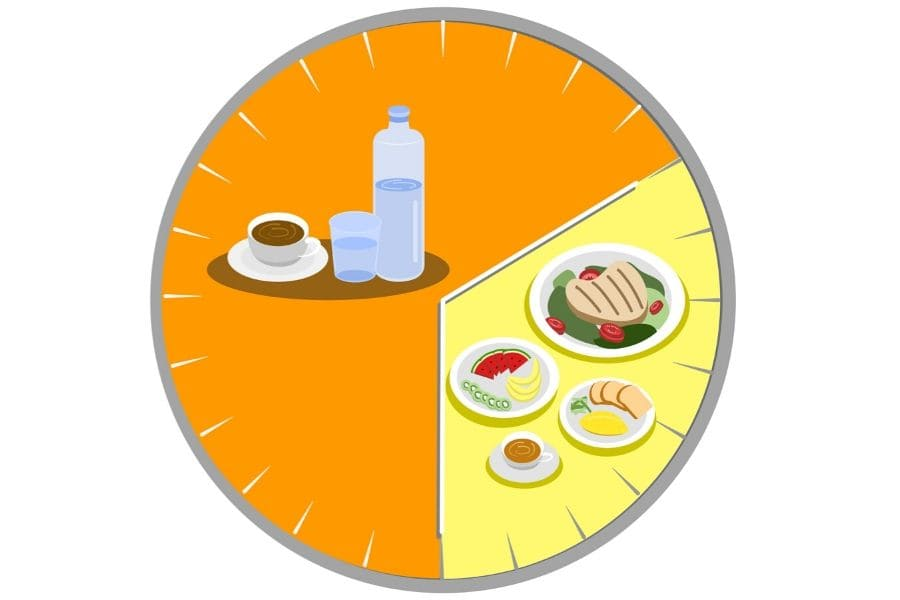

Beim Intervallfasten, was auch als intermittierenden Fasten (lateinisch intermittere = unterbrechen oder aussetzen) bekannt ist, wechselt man zwischen Fasten und der gewohnten Ernährung ab.
Es gibt zwei Methoden, die am bekanntesten sind und am häufigsten verwendet werden:
5:2 : An fünf Tagen in der Woche wird normal gegessen und an zwei Tagen fast nichts.
16:8 : Zwischen der letzten Mahlzeit des Vortages und der ersten Mahlzeit des Tages liegen 16 Stunden. In den acht Stunden, in denen man essen darf, werden zwei Mahlzeiten zu sich genommen.
Die bekannteste Form des Intervallfastens ist die 5:2-Diät: An fünf Tagen in der Woche darf man wie gewohnt essen, ohne Kalorien zu zählen. An zwei Tagen wird die Nahrungszufuhr bei Frauen auf 500 bis 800, bei Männern auf 600 bis 850 Kalorien reduziert. Dazu gilt es, viel Kalorienfreies zu trinken. Schnell verdauliche Kohlenhydrate wie Weizenbrot, Nudeln, Kartoffeln und Zucker sind an den Fastentagen ganz zu meiden. So lernt der Körper, von seinen Reserven zu leben.
Wer keine ganzen Tage fasten möchte, kann längere Essenspausen in den Tagesablauf einbauen. Bei der 16:8-Diät lässt man entweder die Früh- oder Spätmahlzeit ausfallen, sodass man 16 Stunden am Stück auf Nahrung verzichtet. Wer zum Beispiel nach 17 Uhr nichts mehr isst, darf am nächsten Morgen um 9 Uhr wieder frühstücken. Der Stoffwechsel kommt dadurch jede Nacht in ein kurzes Fasten. Ein angenehmer Nebeneffekt: Der Körper hat nachts weniger mit der Verdauung zu tun, was der Schlafqualität zugutekommt.
Bei beiden Varianten ist es wichtig, in den Phasen der Nahrungsaufnahme nicht mehr zu essen als gewohnt. Trinken darf und soll man auch während des Fastens - aber nur kalorienfreie Getränke wie Wasser, dünne Gemüsebrühe, ungesüßten Tee oder maßvoll schwarzen Kaffee.